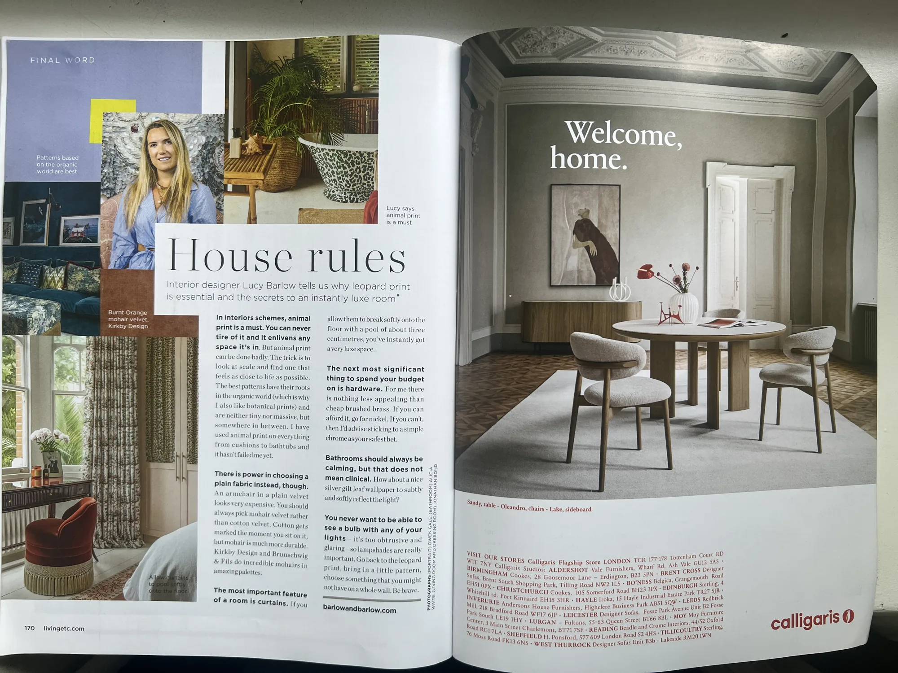

Рассказ-показ · Британская высшая школа дизайна · Maison&Objet 2026
Стили vs Тренды
Какие прижились, а какие забыты?
Ольга Розет
- Оптика художника.
- Историческая дуга 1920–2026.
- «Материя сохраняет то, что забывает глаз»
- Рассказ-показ
- 81 минута лекции
- 36 фрагментов рассказа
- 7 осей авторской матрицы
- Развороты Elle Decoration · Livingetc
Слушать запись целиком · 00:00 – 1:20:52
Инструмент Ольги Розет
Оси анализа
Семь осей — рабочая оптика: по ним разбирается любой интерьер, и по ним же собраны главы этого рассказа.
- Формообразование
Морфология
Скульптура, мутация, ландшафт
Язык формы: от историчных силуэтов и барочной театральности до мутирующих ландшафтных форм и скульптурной мебели. Как рождается форма — из истории, из природы или из чистой геометрии.
- Большие стили эпохи
- Возвращение к корням · 4 ключевых тренда
- Transformism by Harry Nuriev
- Органические поверхности и рельеф
- Facultative Works (Эдуард Еремчук и Катя Пятицкая)
- Yoomoota (Тарас Желтышев)
- Куратор: Руди Генар (Rudy Guénaire)
- Переосмысленное барокко через пустоту
- Слои времени в современном интерьере
- Elle Decoration: Сюрреализм и форма
- Палисандр, реечные ставни и теплая скандинавская геометрия
- Самостоятельная аналитика трендов
- Программа «Декорирование интерьера» в Британке
- Цвета
Интенсивность, температура, характер
Яркие vs приглушённые, тёплые vs холодные
Не перечень конкретных цветов, а генеральные позиции: интенсивность (яркие, приглушённые), температура (тёплые, холодные), место цвета в орнаменте. Минеральная палитра 2026: терракота, охра, известняк.
- Орнаменты
Геометрия и растительность
Геометричные, растительные, гибридные
Геометрические или растительные? Или присутствуют оба — и можно выбирать. Переосмысление орнаментики из Ар-деко, фольклорных мотивов и традиционных ремесленных паттернов.
- Текстуры
Тактильность и столкновение фактур
Тач-тач-тач, множество фактур
Тренд на огромное количество текстур в одном месте. Столкновение разных по тактильности материалов — фольклорный текстиль рядом с камнем, вафельный лен рядом с кожей. Задержаться в телесном опыте.
- Возвращение к корням · 4 ключевых тренда
- Злата Корнилова · Glifart
- Куратор: Франсуа Делькло (François Delclaux)
- Органические поверхности и рельеф
- Переосмысленное барокко через пустоту
- Монолитный камень и натуральный текстиль
- Традиционные методы в современном цикле
- Elle Decoration: Фактура льна и кожи
- Природа внутри дома: живые растения, открытый камень и дерево
- Шерстяные пледы, грубый хлопок и отсутствие синтетического блеска
- Синтез журнального анализа 2026
- Самостоятельная аналитика трендов
- Материалы
Честность сырья без имитаций
Камень, дерево, металл, стекло, лён
Природное сырье без имитаций: необработанный травертин, массив палисандра, вафельный лен, кованый металл, застывшее стекло. Марцин Русак (Flower Infused Glass), Facultative Works (металл как органическая складка).
- Возвращение к корням · 4 ключевых тренда
- Злата Корнилова · Glifart
- Архаика и современный жест
- Куратор: Франсуа Делькло (François Delclaux)
- Марцин Русак (Marcin Rusak)
- Facultative Works (Эдуард Еремчук и Катя Пятицкая)
- Монолитный камень и натуральный текстиль
- Куратор: Элизабет Лериш (Elizabeth Leriche)
- Традиционные методы в современном цикле
- Полистаем интерьерные журналы 2026 года
- Elle Decoration: Фактура льна и кожи
- Палисандр, реечные ставни и теплая скандинавская геометрия
- Природа внутри дома: живые растения, открытый камень и дерево
- Шерстяные пледы, грубый хлопок и отсутствие синтетического блеска
- Самостоятельная аналитика трендов
- Технологии
Craft, 3D-печать и ручные техники
Craft, 3D, ремесло + высокие технологии
Соединение ремесленного craft и высоких технологий: 3D-печать, биомимикрия, переосмысление традиционных технологий. Артизаны как мост между хай-теком и ручным трудом.
- Философия времени
Идеология и философия времени и места
Деглобализация, экология, мета-модерн
Идеология, философия времени и географической точки. Дизайн в мировом политическом и экономическом контексте: деглобализация, устойчивое развитие, замедление перепроизводства, локальная идентичность.
- Стили vs Тренды
- Политико-экономический контекст
- Большие стили эпохи
- Определение тренда
- Transformism by Harry Nuriev
- Культурная память предметов
- Марцин Русак (Marcin Rusak)
- Yoomoota (Тарас Желтышев)
- Куратор: Руди Генар (Rudy Guénaire)
- Куратор: Элизабет Лериш (Elizabeth Leriche)
- Полистаем интерьерные журналы 2026 года
- Синтез журнального анализа 2026
- Самостоятельная аналитика трендов
- Программа «Декорирование интерьера» в Британке
Глава 01 · 00:00 – 16:47 — Большие стили vs Тренды
Слушать эту главу · 00:00 – 16:46
Эта глава в видеозаписи · 00:00


 СТИЛИ VS ТРЕНДЫ
СТИЛИ VS ТРЕНДЫ Ольга Розет — художник, искусствовед, куратор программы „Декорирование интерьера“ в БВШД
 Куратор программы «Декорирование интерьера» в Британке Практикующий дизайнер и декоратор интерьера, искусствовед Автор и ведущая международных образовательных программ Автор научных статей и публикаций в сфере дизайна и декоративно-прикладного искусства Основательница творческой мастерской «Творческая мастерская Ольги Розет»
Куратор программы «Декорирование интерьера» в Британке Практикующий дизайнер и декоратор интерьера, искусствовед Автор и ведущая международных образовательных программ Автор научных статей и публикаций в сфере дизайна и декоративно-прикладного искусства Основательница творческой мастерской «Творческая мастерская Ольги Розет» «Дизайн всегда находится в мировом политическом и экономическом контексте»
 Дизайн всегда находится в мировом политическом иэкономическом контексте. На тренды дизайна влияют глобальные предпосылки.
Дизайн всегда находится в мировом политическом иэкономическом контексте. На тренды дизайна влияют глобальные предпосылки. Стиль — это фундаментальный каркас эпохи, а тренд — ее быстрая реакция

Trend — основная тенденция, направление изменения настроений и потребностей общества
 Какие тренды Maison&Objet прижились в дизайне интерьеров, а какие оказались забыты
Какие тренды Maison&Objet прижились в дизайне интерьеров, а какие оказались забыты Метаморфоза · Мутация · Переосмысленное барокко · Неофольклор
Глава 02 · 16:47 – 31:17 — Гарри Нуриев — Transformism
«Пришло время не создавать больше, а видеть яснее»
Гарри Нуриев (дизайнер года Maison&Objet) постулирует отказ от бесконечного перепроизводства новых форм. Ценностью становится не вещь сама по себе, а изменение угла зрения.
- Отказ от избытка.
- Пересборка утилитарного.
- Честность взгляда.
Слушать эту главу · 16:46 – 31:17
Эта глава в видеозаписи · 16:46
 TRANSFORMISM BY HARRY NURIEV «Трансформизм — это способвидеть, чувствовать, двигаться по миру. Мы живем в эпоху, переполненнуюобъектами, данными, бесконечными идеями.Если XVIII век говорил цветом, XIX —формой, а XX —философией, то сегодняшний голос — это голосвосприятия. Нам нужно не больше изобретений, а ясность, чуткость,эмпатия.Пришло время не создавать больше,а видеть яснее». ТРЕНД М Е Т А М О Р Ф О З А
TRANSFORMISM BY HARRY NURIEV «Трансформизм — это способвидеть, чувствовать, двигаться по миру. Мы живем в эпоху, переполненнуюобъектами, данными, бесконечными идеями.Если XVIII век говорил цветом, XIX —формой, а XX —философией, то сегодняшний голос — это голосвосприятия. Нам нужно не больше изобретений, а ясность, чуткость,эмпатия.Пришло время не создавать больше,а видеть яснее». ТРЕНД М Е Т А М О Р Ф О З А «Если XVIII век говорил цветом, XIX — формой, а XX — философией, то сегодняшний голос — это голос восприятия... Пришло время не создавать больше, а видеть яснее»
Глава 03 · 31:17 – 50:58 — What's New? In Retail: Франсуа Делькло
Слушать эту главу · 31:17 – 50:58
Эта глава в видеозаписи · 31:17

 https://glifart.com/
https://glifart.com/ Тактильный текстиль, живой гобелен и авторский арт-объект
Соединение архаичного ремесла и современного пространственного жеста.

 Злата Корнилова Злата Корнилова
Злата Корнилова Злата Корнилова Сохранение ручного ткачества в диалоге с современной архитектурой
 Сектор Retail «What's New? In Retail» Куратор: Франсуа Делькло Материя сохраняет то, что забывает глаз. ТРЕНД М У Т А Ц И Я Н Е О Ф А Л Ь К Л О Р
Сектор Retail «What's New? In Retail» Куратор: Франсуа Делькло Материя сохраняет то, что забывает глаз. ТРЕНД М У Т А Ц И Я Н Е О Ф А Л Ь К Л О Р «Материя сохраняет то, что забывает глаз»


Материалы обретают природную шероховатость и текучесть


Переосмысление локальных ремесел без ухода в этнографический китч
 Вазы из серии Flower Infused Glass Марцин Русак
Вазы из серии Flower Infused Glass Марцин Русак Flower Infused Glass — застывшие во времени живые цветы, биомимикрия и хрупкость
Смола и стекло останавливают увядание; заземление — в природной хрупкости.

 Facultative Works Эдуард Еремчук и Катя Питицкая
Facultative Works Эдуард Еремчук и Катя Питицкая Металл как органическая ткань. Индустриальный ресайкл с человеческим теплом
Металл как органическая складка: ресайкл и новая тактильность промышленного материала.

 Yoomoota (Тарас Желтышев)
Yoomoota (Тарас Желтышев) Биоморфная пластика и сказочная анатомия предметов в жилом интерьере
Глава 04 · 50:58 – 1:08:29 — Hospitality & Decor: Генар и Лериш
Освобождение гостиничного номера от псевдоискусства. Драматизм через пустоту
Слушать эту главу · 50:58 – 1:08:29
Эта глава в видеозаписи · 50:58
Сектор Hospitality Куратор: Руди Генар ТРЕНД М Е Т А М О Р Ф О З А (относится к типологии пространстватрансформация гостиничного номерачерез деконструкцию (устранение бессмысленных объектов: псевдоискусства, стандартизированные элементы комфорта) ТРЕНД П Е Р Е О С М Ы С Л Е Н Н О Е Б А Р О К К О (драмматический эффектдостигается не через нагромождение декора, а через пустоту иконцептуальность) Метаморфоза гостиничного пространства через освобождение от псевдоискусства
Переосмысленное барокко. Устранение нагромождения мебели. Номер как храм тишины и чистой фактуры камня и льна.


Драматизм достигается не нагромождением вещей, а качеством тишины и света

Пространство, где тело отдыхает от визуального шума
 «What's New? In Decor» Куратор Елизабет Лериш Проект Элизабет Лериш на январской выставке 2026 года получил название «Археология будущего» (An Archaeology of the Future). ТРЕНД П Е Р Е О С М Ы С Л Е Н Н О Е Б А Р О К К О (базовый принцип экспозиции — гибридизация исторических стилей. Происходит использование архетипичных архитектурных форм прошлого для конструирования новых функциональных объектов, театрализация экпозиции) ТРЕНД Н Е О Ф О Л Ь К Л О Р (фиксация на традиционных методах производства и их возвращение в современный цикл)
«What's New? In Decor» Куратор Елизабет Лериш Проект Элизабет Лериш на январской выставке 2026 года получил название «Археология будущего» (An Archaeology of the Future). ТРЕНД П Е Р Е О С М Ы С Л Е Н Н О Е Б А Р О К К О (базовый принцип экспозиции — гибридизация исторических стилей. Происходит использование архетипичных архитектурных форм прошлого для конструирования новых функциональных объектов, театрализация экпозиции) ТРЕНД Н Е О Ф О Л Ь К Л О Р (фиксация на традиционных методах производства и их возвращение в современный цикл) Проект „Археология будущего“ (An Archaeology of the Future)
Неофольклор, раскопки культурных слоёв и гибридизация эпох.


Соединение античных силуэтов и цифровой параметрики


Глина, терракота, шерсть ручного прядения как основа уюта
Глава 05 · 1:08:29 – 1:14:11 — Полистаем интерьерные журналы 2026
106 оригинальных 12-мегапиксельных снимков из Google Drive Ольги: Elle Decoration (Июль–Август 2026) и Livingetc (Май 2026) — здесь избранные развороты. Живой типографский глянец, фактура бумаги и макро-детали интерьеров. Фотографии разворотов: © Elle Decoration · © Livingetc; фрагменты приводятся в обзорных целях с указанием источника.
Слушать эту главу · 1:08:29 – 1:14:11
Эта глава в видеозаписи · 1:08:29
Как подиумная концепция выставки материализуется в реальном жилом доме

100 лет сюрреализма (1924–2024–2026): игра масштабов и странность обыденного

Вафельный лен и состаренная кожа в интерьере загородного люкса


Интерьер больше не про показуху — он про качество осязания жизни

Трансформация гаража в 70-м люкс: вафельный лен, черная кожа, патина латуни.
Датский модернизм 1960-х: палисандр, реечные ставни и теплая древесина.

Минеральная гамма: терракота, известняк и матовая глубина цвета.

Тактильное зонирование: тяжелые шторы и естественный свет.
Глава 06 · 1:14:11 – 1:20:51 — Матрица и Британка: Практика взгляда
Всё связано с нашим тач-тач-тач, задержаться на этой земле, задержаться в телесном опыте
Слушать эту главу · 1:14:11 – 1:20:51
Эта глава в видеозаписи · 1:14:11
 Самостоятельная аналитика трендов Формообразование (морфология), цвета, орнаменты, текстуры, материалы, технологии, идеология/философия времени.
Самостоятельная аналитика трендов Формообразование (морфология), цвета, орнаменты, текстуры, материалы, технологии, идеология/философия времени. «Формообразование (морфология), цвета, орнаменты, текстуры, материалы, технологии, идеология/философия времени»

 Декорирование интерьера в Британке Старт: Период обучения: Формат: 22 октября 2026 8 месяцев очно узнать подробнее
Декорирование интерьера в Британке Старт: Период обучения: Формат: 22 октября 2026 8 месяцев очно узнать подробнее Старт 22 октября 2026 · 8 месяцев глубокой практики и калибровки оптики
Матрица семи осей
Универсальный объективный инструмент для декораторов и архитекторов. Обоснование концепций и смет перед заказчиками.
Старт 22 октября 2026
Декорирование интерьера в Британке
8 месяцев глубокого погружения. Авторская программа Ольги Розет в Британской высшей школе дизайна (Universal University).
- Очный формат · Москва
- Практика и дипломные проекты
- Калибровка оптики